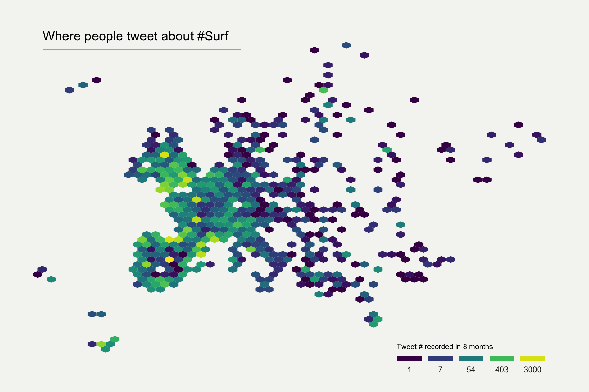

Hexbin map
definition - mistake - related - code
The term hexbin map refers to two different concepts:
one value per state and a specific shape file with hexagone boundaries.# library
library(tidyverse)
# Hexbin available in the geojson format here: https://team.carto.com/u/andrew/tables/andrew.us_states_hexgrid/public/map. Download it and then:
library(rgdal)
spdf <- readOGR("us_states_hexgrid.geojson.json", "OGRGeoJSON")
# I need to 'fortify' the data to be able to show it with ggplot2 (we need a data frame format)
library(broom)
spdf@data = spdf@data %>% mutate(google_name = gsub(" \\(United States\\)", "", google_name))
spdf_fortified <- tidy(spdf, region = "google_name")
# Calculate the centroid of each hexagon to add the label:
library(rgeos)
centers <- cbind.data.frame(data.frame(gCentroid(spdf, byid=TRUE), id=spdf@data$iso3166_2))
# Found here: https://www.cdc.gov/nchs/nvss/marriage-divorce.html
data=read.table("https://www.r-graph-gallery.com/wp-content/uploads/2017/12/State_Marriage_Rates.csv", header=T, sep=",", na.strings="---")
# Merge geospatial and numerical information
spdf_fortified = spdf_fortified %>%
left_join(. , data, by=c("id"="state"))
# Prepare binning
spdf_fortified$bin = cut( spdf_fortified$y_2015 , breaks=c(seq(5,10), Inf), labels=c("5-6", "6-7", "7-8", "8-9", "9-10", "10+" ), include.lowest = TRUE )
# Prepare a color scale coming from the viridis color palette
library(viridis)
my_palette=rev(magma(8))[c(-1,-8)]
# plot
ggplot() +
geom_polygon(data = spdf_fortified, aes(fill = bin, x = long, y = lat, group = group) , size=0, alpha=0.9) +
geom_text(data=centers, aes(x=x, y=y, label=id), color="white", size=3, alpha=0.6) +
theme_void() +
scale_fill_manual(
values=my_palette,
name="Wedding per 1000 people in 2015",
guide = guide_legend( keyheight = unit(3, units = "mm"), keywidth=unit(12, units = "mm"), label.position = "bottom", title.position = 'top', nrow=1)
) +
ggtitle( "A map of marriage rates, state by state" ) +
theme(
legend.position = c(0.5, 0.9),
text = element_text(color = "#22211d"),
plot.background = element_rect(fill = "#f5f5f2", color = NA),
panel.background = element_rect(fill = "#f5f5f2", color = NA),
legend.background = element_rect(fill = "#f5f5f2", color = NA),
plot.title = element_text(size= 22, hjust=0.5, color = "#4e4d47", margin = margin(b = -0.1, t = 0.4, l = 2, unit = "cm")),
)
no map boundaries is needed. It requires only a list of latitude and longitude.# Libraries
library(tidyverse)
library(viridis)
library(hrbrthemes)
library(kableExtra)
options(knitr.table.format = "html")
library(mapdata)
# Load dataset from github
data <- read.table("https://raw.githubusercontent.com/holtzy/data_to_viz/master/Example_dataset/17_ListGPSCoordinates.csv", sep=",", header=T)
# plot
data %>%
filter(homecontinent=='Europe') %>%
ggplot( aes(x=homelon, y=homelat)) +
geom_hex(bins=59) +
ggplot2::annotate("text", x = -27, y = 72, label="Where people tweet about #Surf", colour = "black", size=5, alpha=1, hjust=0) +
ggplot2::annotate("segment", x = -27, xend = 10, y = 70, yend = 70, colour = "black", size=0.2, alpha=1) +
theme_void() +
xlim(-30, 70) +
ylim(24, 72) +
scale_fill_viridis(
trans = "log",
breaks = c(1,7,54,403,3000),
name="Tweet # recorded in 8 months",
guide = guide_legend( keyheight = unit(2.5, units = "mm"), keywidth=unit(10, units = "mm"), label.position = "bottom", title.position = 'top', nrow=1)
) +
ggtitle( "" ) +
theme(
legend.position = c(0.8, 0.09),
legend.title=element_text(color="black", size=8),
text = element_text(color = "#22211d"),
plot.background = element_rect(fill = "#f5f5f2", color = NA),
panel.background = element_rect(fill = "#f5f5f2", color = NA),
legend.background = element_rect(fill = "#f5f5f2", color = NA),
plot.title = element_text(size= 13, hjust=0.1, color = "#4e4d47", margin = margin(b = -0.1, t = 0.4, l = 2, unit = "cm")),
) 
Note on the first map: You can learn more about this story here. Data comes from here. Code has been inspired from this post and that one.
Note on the second map: This map shows the geographic position of about 200k tweets containing the hashtags #surf, #windsurf or #kitesurf. Read more about it here.
Hexbin or grid map has an advantage over usual choropleth maps. In choropleths, a large polygon’s data looks more emphasized just because of its size, what introduces a bias. Here with hexbin, each region is represented equally dismissing the bias.
There’s a drawback to this format though. Map readers generally recognize a geographic area by it’s shape and orientation to other areas. For instance, the geography of the US is well known and people easily identify different regions. In hexbin maps, these landmarks do not exist anymore what can confuse the audience. One solution for this is to choose a basemap that uses labels on top of your data layer.
Hexbin map uses hexagons to split the area in several parts and attribute a color to it. Note that it is possible to use square instead of hexagones, resulting in a 2D histogram map.
All the mistakes presented in the choropleth section apply
The R and Python graph galleries are 2 websites providing hundreds of chart example, always providing the reproducible code. Click the button below to see how to build the chart you need with your favorite programing language.
R graph gallery Python gallery
Any thoughts on this? Found any mistake? Disagree? Please drop me a word on twitter or in the comment section below:
A work by Yan Holtz for data-to-viz.com